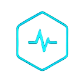
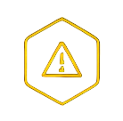
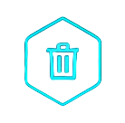

Awaiting verification.
PendingAwaiting recorded steps.
0 / 0Environment ready
Build status
Dependencies installed
Artifacts generated
Tests executed
Deployment status
Awaiting observed checks.
Pending0
Total
0
Passed
0
Failed
—
Success Rate
Access logs, reports and artifacts.

Awaiting recorded blockers.
None
Awaiting cleanup status.
PendingWaiting for the recorded task outcome.